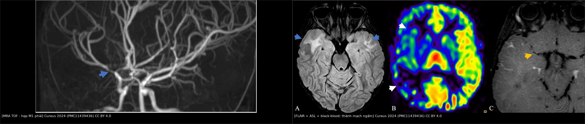
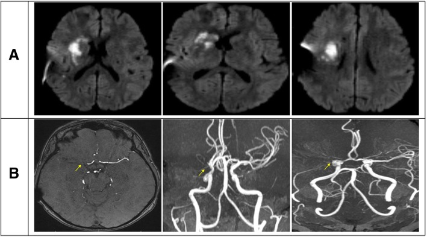
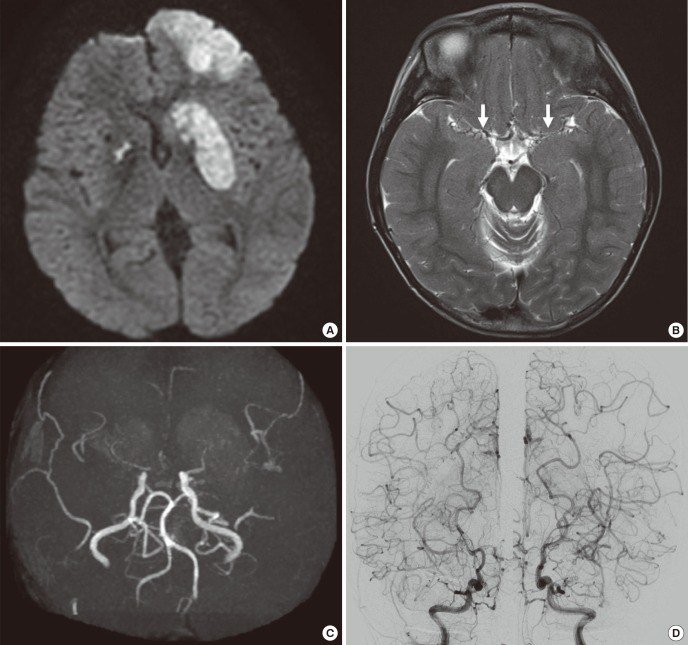
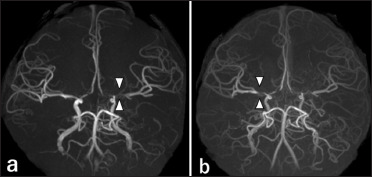
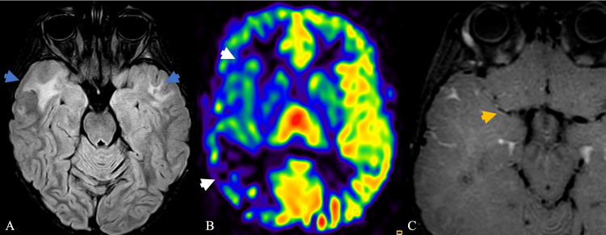

262 — Bệnh mạch máu LỚN do xạ trị não (hẹp–tắc kiểu moyamoya) / Radiation-induced large-vessel cerebral vasculopathy (radiation-induced moyamoya syndrome)
Tags: pattern:hep-mach pattern:tac-mach pattern:ngam-thanh-mach pattern:nhoi-mau-phan-thuy pattern:bang-he-moyamoya vung:da-giac-willis vung:dong-mach-canh-trong vung:nao score:Suzuki score:CVR score:Rogg protocol:MRI-MRA-TOF protocol:HR-vwMRI protocol:CTA-DSA protocol:CTP-Diamox protocol:ASL
Mức chắc chắn (certainty): tổng hợp y văn (literature synthesis) — 3 ca nguyên văn có ảnh (J Med Case Rep 2019, PMC6545722; J Korean Med Sci 2017, PMC5639076; Surg Neurol Int 2026, PMC13331182) + 1 ca nguyên văn dùng cho phần cơ chế (Cureus 2024, PMC11439436) + 2 tổng quan (Cerebrovasc Dis Extra 2025, PMC12266706; J Clin Med 2026, PMC13027234) + 1 ca muộn 30 năm có kèm u màng não (Radiol Case Rep 2026, PMC12925087). Không có thử nghiệm ngẫu nhiên nào về điều trị; mọi ngưỡng xử trí là tổng hợp thực hành, chỗ suy luận được ghi rõ.
Câu chốt: đây là hẹp lòng mạch DO XẠ, không phải xơ vữa và không phải moyamoya bẩm sinh. Ba trụ để không bỏ sót: (1) hẹp dài, nhẵn, KHÔNG vôi hóa, nằm đúng trường chiếu (ICA tận–M1–A1), xuất hiện 2–25 năm sau xạ, có thể một bên; (2) trên HR-vwMRI thành mạch dày + ngấm đồng tâm trong khi moyamoya nguyên phát có thành mỏng, đường kính ngoài teo; (3) nguy cơ phụ thuộc liều: tổn thương mạch vùng circle of Willis 0,2% ở 30 Gy → 1,3% ở 45 Gy → 4,4% ở 54 Gy. Sai lầm chết người: gọi là "xơ vữa ở người trẻ" rồi chỉ cho statin, hoặc hạ huyết áp/giảm CO₂ khi mổ u thứ phát trên bệnh nhân đã cạn dự trữ tưới máu — cả hai đều gây nhồi máu vùng ranh giới.
1. Tổng quan bệnh học – cơ chế hình ảnh
1.1 Bệnh học: xơ hóa – tăng sinh nội mạc do tế bào nội mô chết, không phải mảng xơ vữa điển hình
- Định nghĩa: bệnh mạch máu lớn do xạ trị (radiation-induced large-vessel vasculopathy, RILVV; y văn cũ gọi occlusive radiation vasculopathy — ORV) là hẹp hoặc tắc tiến triển của các động mạch lớn nội sọ trong trường chiếu cũ, thường ở ICA đoạn trên yên, M1, A1, có hoặc không có mạng bàng hệ kiểu moyamoya (khi có → hội chứng moyamoya do xạ, radiation-induced moyamoya syndrome — RIMMS) (Cerebrovasc Dis Extra 2025, PMC12266706).
- Chuỗi mô bệnh 4 bước (tổng hợp từ mô tả giải phẫu bệnh trong PMC6545722 và PMC11439436):
- Tổn thương nội mô do bức xạ → apoptosis, lão hóa tế bào, mất cân bằng yếu tố đông máu/tiêu sợi huyết và yếu tố giãn mạch.
- Viêm mạn + stress oxy hóa → bạch cầu bám và tế bào bọt (foam cell) lắng trong nội mạc.
- Tăng sinh cơ trơn nội mạc (myointimal proliferation) + hyalin hóa dày đặc lớp áo giữa, xơ hóa màng đàn hồi và lớp áo ngoài → lòng mạch hẹp nhẵn, dài, không có lõi lipid/nắp xơ như xơ vữa.
- Tổn thương vasa vasorum → thiếu máu thành mạch, xơ hóa lan dọc đoạn chiếu; không có vôi hóa vì không có mảng xơ vữa trưởng thành.
- Vì sao trẻ nhạy hơn người lớn: hệ mạch đang phát triển + số lần phân chia tế bào nội mô cao; tổn thương mạch xuất hiện sớm hơn và nặng hơn theo liều (PMC13027234). Ca trẻ 10 tuổi sau xạ hố sau 4–5 năm đã hẹp M1; ca 17 tuổi sau 54 Gy hẹp M1 trái lúc 18 tháng và M1 phải 6 tháng sau đó (PMC13331182).
- Yếu tố nguy cơ đã kiểm chứng: trường chiếu ôm circle of Willis, liều ≥ 45 Gy, tuổi nhỏ lúc xạ, hóa trị kèm, yếu tố mạch máu kinh điển (tăng huyết áp, đái tháo đường, rối loạn lipid, hút thuốc) làm bệnh nặng thêm nhưng không cần có để bệnh xuất hiện (PMC12266706; PMC13331182).
1.2 Ngưỡng định lượng trụ cột
| Đại lượng | Con số | Nguồn |
|---|---|---|
| Bất thường mạch máu phát hiện trên hình ảnh sau xạ sọ | 5–20% | PMC13331182 (tổng hợp Bavle) |
| Thời gian từ xạ đến phát hiện trên hình ảnh | 2–28 năm | PMC13331182 |
| Đột quỵ/TIA do bệnh mạch xạ | 2–18,8%, khởi phát 2,3–24 năm sau xạ | PMC13331182 |
| Đột quỵ ở trẻ sống sót u não sau xạ sọ | 548/100.000 người–năm, gấp ~100 lần trẻ thường | PMC13331182 (Campen 2012) |
| Hội chứng moyamoya sau xạ, đoàn hệ 391 trẻ Đài Loan, theo dõi 7 năm | u thần kinh thị 33,3% · u sọ hầu 12,5% · u nguyên bào tủy 2% · u tế bào sao 5,3% | PMC6545722 (Wu 2016) |
| Đáp ứng theo liều (PENTEC) — biến cố mạch vùng circle of Willis | 0,2% (30 Gy) · 1,3% (45 Gy) · 4,4% (54 Gy) | PMC12925087 (Waxer 2024) |
| U vùng trên yên/trong yên sau xạ | 9–20% bất kỳ bệnh mạch; 5–17,8% thể nặng (gồm moyamoya) | PMC12925087 |
| Thời gian tiềm tàng (ORV) | 2–25 năm | PMC6545722 |
| Thời gian khởi phát bệnh mạch xạ | 4 tháng – 24 năm | PMC11439436 |
| 54 ca moyamoya do xạ 1967–2002 (Desai 2006): tuổi xạ – thời gian tiềm tàng | tuổi trung vị lúc xạ 3,8 tuổi (0,4–47); 56,3% xạ < 5 tuổi; NF1 25,9%; u thần kinh thị 29/54; liều trung bình 46,5 Gy (22–120); latency trung vị 40 tháng (4–240) | PMID 16626890 |
| Tích lũy khởi phát trong 54 ca đó | 27,7% (2 năm) · 53,2% (4 năm) · 74,5% (6 năm) · 95,7% (12 năm) — đây là tỷ lệ trong số ca đã mắc, KHÔNG phải tỷ lệ mắc của quần thể | PMID 16626890 |
| Ca muộn nhất trong bộ sưu tập này | 30 năm sau xạ u sọ hầu, tắc M1 trái + u màng não | PMC12925087 |
1.3 TẠI SAO hình ảnh trông như vậy (vật lý + mô bệnh)
- Hẹp DÀI và NHẴN trên CTA/MRA: tổn thương là tăng sinh nội mạc lan dọc chứ không phải mảng khu trú ở chỗ chia đôi → bờ lòng mượt, đoạn hẹp > 10 mm, thường liên tục từ ICA tận xuống M1/A1. Xơ vữa thường khu trú ở chỗ chia, lệch tâm, có vôi hóa và tái tạo dương.
- Không vôi hóa: vôi hóa cần mảng xơ vữa lâu năm có lõi hoại tử; bệnh xạ là xơ hóa – tăng sinh tế bào, nên không có cặn calci — đây là dấu chốt loại xơ vữa mạnh trên CTA không cản quang.
- Thành mạch DÀY + NGẤM ĐỒNG TÂM trên HR-vwMRI: gadolinium rò từ vasa vasorum khi tính thấm nội mô tăng; viêm – xơ thành mạch lan toàn chu vi → ngấm đồng tâm. So sánh nhóm: Aoki 2002 thấy 5 ca viêm mạch do xạ có thành dày + ngấm mạnh, khác 18 ca moyamoya (thành mỏng, ít/không ngấm) (PMC9362557; PMC7656038). Đường kính ngoài không teo nhỏ như moyamoya là suy luận từ hình thái thành dày về phía lòng, không phải tiêu chuẩn đã kiểm chứng — vì vậy luôn đọc kèm bề dày thành (mm), không chỉ đường kính lòng.
- Nhồi máu KIỂU RANH GIỚI (watershed): khi lòng hẹp tiến triển, tự điều hòa giãn mạch tối đa giữ được lưu lượng lúc nghỉ nhưng mất dự trữ; tụt huyết áp, mất nước, thiếu máu, hoặc giảm CO₂ (co mạch) sẽ đẩy vùng giữa các lãnh thổ MCA–ACA/PCA vào thiếu máu → ổ nhồi máu hình chêm, dọc ranh giới, không theo một nhánh. Ca 17 tuổi: nhồi máu ranh giới phải sau mất nước 2,5 kg trong bối cảnh hẹp M1 hai bên (PMC13331182).
- DWI sáng + ADC tối: phù tế bào của nhồi máu cấp; ADC tối phân biệt với phù vận mạch của hoại tử xạ/SMART (bài 259)/RIL (bài 261).
- ASL/CTP giảm CBF, TTP–MTT kéo dài: chậm dòng sau chỗ hẹp; sau acetazolamide có 3 kiểu đáp ứng (Rogg): I tăng bình thường; II vùng giảm lúc nghỉ tăng lên; III "steal" — giảm thêm vì máu bị hút sang vùng giãn mạch tốt hơn → dự trữ đã cạn. Ca 31 tuổi: type III ở toàn bộ lãnh thổ MCA phải, penumbra 132,52 mL, lõi nhồi máu 14,97 mL (PMC6545722).
- Bàng hệ kiểu moyamoya: các động mạch thấu chi (lenticulostriate, đồi thị) giãn và ngoằn ngoèo bù cho M1/ICA tận → "khói thuốc" trên DSA; trên FLAIR là dấu ivy (mạch màng mềm chậm dòng) — không phải xuất huyết dưới nhện.
- Vì sao có ca KHÔNG có bàng hệ moyamoya: tổn thương xạ tiến triển chậm và ít đối xứng hơn moyamoya bẩm sinh; nhiều ca tắc đơn độc và bàng hệ không đủ thời gian/thành mạch để hình thành. Vì vậy thiếu "khói thuốc" KHÔNG loại trừ bệnh xạ — y văn gọi nhóm này là ORV thay vì moyamoya (PMC6545722; PMC11439436).
- Vi chảy máu + cavernoma đi kèm: xạ gây tổn thương vi mạch → SWI thấy nhiều ổ giảm tín hiệu; đây là cùng phổ bệnh xạ, không phải di căn.
2. Mẫu hình + chẩn đoán phân biệt theo vị trí (Gamut)
Mẫu hình chốt: hẹp–tắc dài, nhẵn, không vôi hóa, ưu thế ICA tận + M1 + A1, trong trường chiếu, một hoặc hai bên, kèm thành mạch dày–ngấm đồng tâm và nhồi máu ranh giới; xuất hiện ≥ 2 năm (thường 5–20 năm) sau xạ; có thể kèm bàng hệ moyamoya, vi chảy máu, u màng não thứ phát.
2.1 Gamut theo đoạn mạch (quan trọng vì quyết định can thiệp)
| Vị trí | Bệnh cảnh điển hình | Ghi chú thực hành |
|---|---|---|
| ICA đoạn trên yên – M1 | Trẻ xạ u sọ hầu/u thần kinh thị; người lớn xạ u tuyến yên, u màng não, NPC | Vị trí hay gặp nhất; hẹp dài từ ICA tận lan ra M1; nếu tắc hoàn toàn → bàng hệ từ ACA/PCA |
| A1 – A2 | Cùng trường chiếu; thường đi kèm M1 | Hẹp A1 hai bên + M1 hai bên = hình ảnh gần giống moyamoya |
| P1 – P2 | Suzuki giai đoạn 4–6; xạ hố sau, u tuyến yên | PCoA/PCA tham gia bàng hệ; tổn thương P1 = nguy cơ xuất huyết cao hơn |
| Động mạch cảnh ngoài sọ (CCA/ICA cổ) | Xạ cổ–đầu (NPC, ung thư vòm) | Hẹp dài, không vôi, dễ loét, hai bên; nguy cơ carotid blowout; xử trí stent/TCAR, không phải bypass nội sọ |
| Động mạch đốt sống – thân nền | Xạ hố sau, u thân nền | Ít gặp hơn; nhồi máu đồi thị/thân não; dễ nhầm bệnh mạch nhỏ |
2.2 Gamut theo tuổi và thời gian (giúp chọn xác suất trước)
- Trẻ em (< 18 tuổi): khởi phát sớm hơn (4 tháng–10 năm), thường hai bên, hay có bàng hệ moyamoya, nhồi máu + thiếu máu não thoáng qua; u sọ hầu, u thần kinh thị, u nguyên bào tủy, u tế bào sao.
- Người lớn trẻ (18–45 tuổi): hẹp một bên hoặc hai bên, nhồi máu ranh giới, thường không có yếu tố nguy cơ xơ vữa; tiền sử xạ thời thơ ấu là mấu chốt.
- Người lớn > 45 tuổi: có thể chồng lấp xơ vữa; tìm vôi hóa, mảng lệch tâm, hẹp ở chỗ chia để loại xơ vữa; u màng não do xạ đi kèm là gợi ý mạnh (PMC6545722; PMC12925087).
2.3 Mnemonic R-A-Y-S (bốn câu hỏi trước khi kết luận)
- R — Radiation field: đoạn hẹp có nằm trong bản đồ liều cũ không? (đối chiếu ảnh xạ trị, mô tả trường chiếu).
- A — Age at RT: xạ lúc < 10 tuổi → nguy cơ cao, khởi phát sớm.
- Y — Years: ≥ 2 năm, thường 5–20 năm; < 6 tháng thì phải nghĩ nguyên nhân khác.
- S — Smooth, long, no calcium: hẹp dài–nhẵn–không vôi; nếu ngắn, lệch tâm, vôi hóa → xơ vữa.
3. Bảng so sánh phân biệt (ma trận đối chiếu)
| Thực thể (entity) | Hình ảnh điển hình | Chốt vào (rule-in) | Chốt loại (rule-out) | Gợi ý xác nhận |
|---|---|---|---|---|
| Bệnh mạch lớn do xạ (RILVV/ORV) | Hẹp dài, nhẵn, không vôi, ICA tận–M1–A1, đúng trường chiếu, một hoặc hai bên; thành dày + ngấm đồng tâm; nhồi máu ranh giới | Tiền sử xạ sọ/đầu + hẹp dài không vôi trong trường chiếu + thành ngấm đồng tâm | Không có tiền sử xạ; hẹp khu trú chỗ chia + vôi hóa + lệch tâm → xơ vữa | Đối chiếu bản đồ liều; HR-vwMRI; DSA; theo dõi tiến triển |
| Bệnh moyamoya nguyên phát (MMD) | Hẹp hai bên ICA tận + M1/A1, mạng "khói thuốc" rõ, thường nữ châu Á 10–20 hoặc 35–50 tuổi | Hai bên + bàng hệ moyamoya điển hình + không tiền sử xạ + có thể RNF213 p.R4810K | Một bên, không bàng hệ, thành dày ngấm → không phải MMD; tiền sử xạ → hội chứng moyamoya do xạ | HR-vwMRI: thành mỏng, đường kính ngoài teo; gene RNF213; DSA |
| Xơ vữa nội sọ | Hẹp khu trú ở chỗ chia, lệch tâm, vôi hóa, tái tạo dương, tuổi lớn, có yếu tố nguy cơ | Vôi hóa + mảng lệch tâm + hẹp < 10 mm ở chỗ chia | Hẹp dài nhẵn không vôi ở người < 40 tuổi không yếu tố nguy cơ → nghĩ xạ | CTA (vôi hóa), HR-vwMRI (mảng lệch tâm), siêu âm mạch cảnh |
| Viêm mạch TKTW nguyên phát (PACNS) | Hẹp nhiều ổ, nhiều đoạn, nhiều mạch, ngấm thành mạch không đồng nhất; DNT viêm; đột quỵ lặp lại nhiều lãnh thổ | DNT có tế bào/protein tăng + hẹp nhiều ổ + không tiền sử xạ + sinh thiết | Hẹp dài đơn độc đúng trường chiếu + DNT bình thường + tiền sử xạ → bệnh xạ | DNT, ANA/ANCA, sinh thiết não–màng não khi còn nghi |
| RCVS | Co thắt lan tỏa, thay đổi từng lần chụp, "chuỗi hạt", đau đầu sét đánh, hồi phục trong 12 tuần | Co thắt đổi hình giữa 2 lần DSA/CTA + đau đầu sét đánh + hồi phục | Hẹp cố định, tiến triển qua nhiều năm → không phải RCVS | Chụp lại sau 4–6 tuần; không ngấm thành mạch |
| Bóc tách nội sọ | Vạt lòng mạch (intimal flap), dấu chuỗi hạt, hẹp dài tới tắc, thường sau chấn thương/cử động mạnh | Flap + giả phình + hẹp dài khởi phát cấp | Tiến triển nhiều năm, hai bên đối xứng, không flap → không bóc tách | HR-vwMRI (flap,hematoma thành mạch); CTA/DSA |
| Co thắt sau xuất huyết dưới nhện | Co thắt lan tỏa trong 3–14 ngày sau SAH | SAH trên CT/DNT + co thắt trong cửa sổ 3–14 ngày | Không SAH + hẹp mạn tính → không phải co thắt | DSA/CTA lặp, siêu âm TCD |
| Bệnh mạch nhỏ do xạ (RIL) | FLAIR sáng đối xứng quanh não thất, không ngấm, không choán chỗ, teo não (bài 261) | Tổn thương chất trắng lan tỏa, không hẹp mạch lớn | Hẹp/tắc mạch lớn có triệu chứng lãnh thổ → bài này | MRI + MRA; phân biệt bằng MRA có hẹp hay không |

Trái: MRA TOF — hẹp nặng M1 phải (mũi tên). Phải: cùng bệnh nhân — FLAIR còn ổ tăng tín hiệu chất trắng thái dương trước, ASL giảm tưới máu lãnh thổ MCA phải, black-blood sau tiêm: ngấm đồng tâm quanh M1 hẹp. Ảnh ghép letterbox từ Cureus 2024 (PMC11439436), CC BY 4.0.3.1 Ba dấu hiệu đọc kỹ trên từng chuỗi
- Dấu "string sign" trên CTA/MRA: đoạn hẹp dài > 10 mm, bờ mượt, không có mảng; đối chiếu đoạn mạch lành ngay trên/dưới để thấy đường kính ngoài không teo (khác MMD).
- Dấu "ivy" trên FLAIR: mạch màng mềm chậm dòng → tăng tín hiệu dạng sợi trong rãnh; đừng đọc là máu dưới nhện — kiểm tra SWI/CT và bệnh cảnh (không đau đầu sét đánh).
- Dấu "brush sign"/vi chảy máu trên SWI: tĩnh mạch tủy giãn nổi bật + ổ giảm tín hiệu < 5 mm nhiều ổ → bệnh vi mạch xạ, gợi ý nguy cơ xuất huyết khi can thiệp.
4. Protocol chụp + hệ phân độ/điểm chuẩn hóa
4.1 Protocol theo tình huống
| Tình huống | Chuỗi bắt buộc | Mục đích |
|---|---|---|
| Sàng lọc sau xạ sọ (≥ 45 Gy hoặc circle of Willis trong trường) | MRI não + TOF-MRA lúc 12 tháng, sau đó mỗi 1–2 năm (đề xuất thực hành — nguồn chỉ khuyến cáo "theo dõi dài hạn", không nêu khoảng cách chuẩn); thêm HR-vwMRI nếu MRA bất thường | Phát hiện hẹp trước khi có triệu chứng; ca 13 tuổi đã có hẹp từ 2011 nhưng bỏ sót vì không so MRA (PMC5639076) |
| Đột quỵ/TIA cấp | DWI/ADC + TOF-MRA + ASL (hoặc CTP) ± HR-vwMRI; CTA nếu không chụp được MRI | Xác định nhồi máu ranh giới, mức hẹp, dự trữ tưới máu |
| Trước mổ u thứ phát / trước can thiệp | DSA (chuẩn vàng) + HR-vwMRI + CTP/SPECT với acetazolamide | Đánh giá Suzuki, bàng hệ, CVR; tránh mổ khi CVR đã cạn mà không chuẩn bị |
| Nghi hẹp cảnh ngoài sọ | Siêu âm Doppler cảnh + CTA cổ; DSA khi can thiệp | Đo IMT, mảng loét/giàu phản âm, mức hẹp |
Thông số HR-vwMRI (theo bài 241): 3T, black-blood T1 sau tiêm + fat-sat, voxel 2,0 × 0,4 × 0,4 mm, FOV 10–13 cm, lát 2 mm; đọc độ dày thành (mm), hình thái ngấm (đồng tâm/lệch tâm), đường kính ngoài.
Acetazolamide (Diamox) 1 g IV, chụp trước và 15–20 phút sau; phân loại Rogg:
- Type I: CBF nền bình thường, tăng sau Diamox → dự trữ tốt.
- Type II: CBF nền giảm, tăng sau Diamox → dự trữ còn, đang bù.
- Type III: CBF nền giảm, giảm thêm sau Diamox (steal) → dự trữ cạn, nguy cơ nhồi máu khi tụt huyết áp/mất nước; cân nhắc tái thông (PMC6545722).
4.2 Phân độ Suzuki (6 giai đoạn, theo DSA) — dùng chung cho bệnh xạ có bàng hệ
flowchart TD
A[Hẹp/tắc mạch lớn trong trường chiếu] --> B{Có bàng hệ kiểu moyamoya?}
B -->|Không| C[ORV: hẹp đơn độc<br/>Suzuki không áp dụng]
B -->|Có| D[Suzuki 1: hẹp ICA tận]
D --> E[Suzuki 2: khởi phát mạch moyamoya]
E --> F[Suzuki 3: mạng moyamoya đậm đặc]
F --> G[Suzuki 4: mạng moyamoya giảm, PCA bắt đầu bù]
G --> H[Suzuki 5: mạng moyamoya rất giảm, bàng hệ ngoài sọ]
H --> I[Suzuki 6: mất hoàn toàn, chỉ còn bàng hệ ECA]
C --> J{CVR còn?}
J -->|Type I-II| K[Điều trị nội khoa + theo dõi]
J -->|Type III / có triệu chứng| L[Tái thông: bypass trực tiếp hoặc EDAS/EGPS]
G --> L
I --> L
- Suzuki 1–6 (Suzuki & Takaku 1969; consensus 2024 nhấn mạnh hai bên có thể lệch giai đoạn) — stage 4–6 là khi PCA tham gia bù; đây là nhóm nguy cơ xuất huyết và nguy cơ cao khi mổ.
- Berlin grading và phân độ tuần hoàn bàng hệ (Liu 2019) bổ sung cho Suzuki vì Suzuki không phản ánh dự trữ tưới máu (PMC13540286). Trong thực hành, ghi Suzuki + CVR + có/không triệu chứng — ba trục này mới quyết định mổ.
4.3 Quyết định điều trị (flowchart thực hành)
flowchart TD
A[Bệnh nhân có tiền sử xạ sọ/đầu + hẹp mạch lớn] --> B{Có triệu chứng thiếu máu não?}
B -->|Không| C[Kiểm soát HA, lipid, đường huyết<br/>không khuyến cáo kháng đông dự phòng]
C --> D[Theo dõi MRA 1-2 năm/lần]
B -->|Có| E[Chống kết tập tiểu cầu: aspirin 81 mg<br/>± clopidogrel 3 tháng sau biến cố]
E --> F{CVR type III hoặc tái phát dù điều trị?}
F -->|Có| G[Tái thông: STA-MCA trực tiếp<br/>hoặc EDAS/EGPS gián tiếp]
F -->|Không| H[Tiếp tục nội khoa + tránh tụt HA/mất nước]
G --> I[Theo dõi: tránh tụt HA, giữ PaCO2 bình thường<br/>đề phòng máu tụ ngoài màng cứng + rò vết mổ]
- Nội khoa: aspirin 81 mg; sau biến cố cấp có ca dùng aspirin + clopidogrel 3 tháng rồi aspirin đơn độc (PMC6545722). Statin theo hướng dẫn; kiểm soát huyết áp nhưng tránh hạ quá mức ở người đã cạn CVR.
- Kháng đông dự phòng ở người không triệu chứng: KHÔNG — đoàn hệ 37.638 bệnh nhân ung thư đầu cổ đã xạ, dùng thuốc kháng huyết khối không giảm đột quỵ/TIA (aHR 0,812; KTC 95% 0,199–3,309) và không tăng chảy máu (PMC12266706).
- Tái thông: bypass trực tiếp STA–MCA khi có động mạch cho phù hợp; EDAS/EGPS khi mạch nhỏ/trẻ nhỏ. Ca 13 tuổi: EDAS trái + EGPS → hết đau đầu sau 1 tháng, nhưng ngày 1 sau mổ có máu tụ ngoài màng cứng + phù nhu mô, và 2 tháng sau rò vết mổ (PMC5639076) — biến chứng đặc thù của da đầu đã xạ.
- Stent nội sọ do xạ: không phải lựa chọn đầu tay; tổn thương lan dài, tái hẹp cao; chỉ cân nhắc thể ngoài sọ (ICA cổ) với stent/TCAR (TCAR: biến cố gộp 3,2% so với 11,2% stent qua đường đùi và 11,1% CEA) (PMC12266706).
- Tiêu sợi huyết: không chống chỉ định vì lý do xạ; ca 17 tuổi được rt-PA lúc 4 giờ, mRS 0 lúc ra viện (PMC13331182).
5. Biến thể bình thường và cạm bẫy
5.1 Biến thể bình thường dễ đọc quá
- Bất đối xứng nhẹ M1/A1 do bất sản/hypoplasia A1 (A1 bên kia bù) — không phải hẹp; kiểm tra đường kính ngoài và so phim cũ.
- Tĩnh mạch tủy nổi trên SWI ở người trẻ (brush sign) có thể là bình thường; chỉ gọi bệnh khi kèm hẹp mạch lớn hoặc nhiều vi chảy máu.
- Dấu ivy nhẹ ở thùy đỉnh có thể gặp ở moyamoya không triệu chứng — đọc cùng MRA, không kết luận SAH.
5.2 Cạm bẫy (pitfall)
- "Không có bàng hệ moyamoya = không phải bệnh xạ" — SAI. Nhiều ca là ORV tắc đơn độc, không có "khói thuốc" (PMC6545722; PMC11439436). Chẩn đoán dựa tiền sử xạ + phân bố + thành mạch.
- "Hẹp một bên = moyamoya bẩm sinh" — moyamoya thường hai bên, nhưng thể một bên tồn tại; bệnh xạ hay một bên khi trường chiếu lệch. Đừng lấy tính hai bên làm tiêu chuẩn.
- "Người trẻ hẹp M1 = xơ vữa sớm" — nếu không vôi, hẹp dài, không yếu tố nguy cơ, phải hỏi tiền sử xạ thời thơ ấu. Ca 31 tuổi bị gọi nhầm hướng xơ vữa cho tới khi lộ tiền sử u nguyên bào tùng tuyến lúc 3 tuổi (PMC6545722).
- Hạ huyết áp/giảm CO₂ khi gây mê — ca 13 tuổi bị nhồi máu cấp sau mổ u màng não trong lúc PaCO₂ 31–34 mmHg; tác giả cho rằng giảm CO₂ gây co mạch + giảm tưới máu vùng ranh giới (giả thuyết). Giữ PaCO₂ bình thường, tránh tụt HA ở mọi bệnh nhân đã xạ có hẹp mạch (PMC5639076).
- MRA đánh giá quá nặng mức hẹp và bỏ sót hẹp nhẹ; CTA phân giải cao hơn cho hẹp nhẹ; DSA vẫn là chuẩn khi cân nhắc can thiệp (PMC13027234).
- Nhầm ổ nhồi máu ranh giới với "di căn mới" ở bệnh nhân ung thư: ổ hình chêm, dọc ranh giới, DWI sáng/ADC tối, không ngấm, không choán chỗ → nhồi máu, không phải tiến triển u.
- Bỏ sót hẹp mạch vì chỉ đọc não trên MRI thường — ca 13 tuổi có hẹp ICA tận từ 2011 nhưng không được nhận ra cho tới khi nhồi máu; luôn xem MRA/TOF ở bệnh nhân đã xạ (PMC5639076).
- Sau EDAS ở da đầu đã xạ: nguy cơ máu tụ ngoài màng cứng, phù nhu mô, rò vết mổ; đóng vết mổ kỹ, cắt chỉ muộn (PMC5639076).
- Tắc M1 + bàng hệ từ ACA/PCA dễ bị đọc là "moyamoya điển hình"; nhưng bàng hệ một bán cầu, theo lãnh thổ, không có mạng thấu chi dày đặc → ORV (PMC6545722).
- Xạ phẫu (SRS) cũng gây hẹp: bệnh nhân đã SRS có thể hẹp muộn quanh tổn thương; không loại trừ chỉ vì liều xạ khu trú.
6. Tự lượng giá — Blind Quiz
Ca 1 — Nam 31 tuổi, yếu nửa người trái 3 ngày. Nhìn DWI và MRA trước, mô tả trước.

- Gợi ý lâm sàng: không tăng huyết áp, không đái tháo đường, LDL 117 mg/dL, A1C 5,9%; tiền sử u nguyên bào tùng tuyến lúc 3 tuổi đã mổ + xạ + hóa trị.
- Câu hỏi: ổ nhồi máu ở đâu và theo lãnh thổ nào? Mạch nào tắc? Hai chẩn đoán phân biệt hàng đầu? Cần thêm chuỗi nào để quyết định can thiệp?
Bấm để hiện đáp án (findings + chẩn đoán)
- Dấu hiệu: (A) DWI tăng tín hiệu vùng hạch nền phải – bao trong – bao ngoài – corona radiata, kèm ADC tối; (B) MRA tắc hoàn toàn M1 phải, còn đoạn xa được bù từ ACA và PCA phải.
- Chẩn đoán: bệnh mạch lớn do xạ (occlusive radiation vasculopathy) — 28 năm sau xạ u nguyên bào tùng tuyến; không phải xơ vữa (không yếu tố nguy cơ, hẹp dài, không vôi).
- Quyết định: CTP với acetazolamide cho thấy steal type III toàn lãnh thổ MCA phải, penumbra 132,52 mL, lõi 14,97 mL → dự trữ cạn; nhưng phẫu thuật từ chối, điều trị aspirin 81 mg + clopidogrel 75 mg trong 3 tháng, atorvastatin 40 mg.
- Nguồn: J Med Case Rep 2019 (PMC6545722), CC BY 4.0.
Ca 2 — Bé trai 13 tuổi, yếu nửa người phải sau mổ u màng não. Nhìn DWI–T2–MRA–DSA.

- Gợi ý: u nguyên bào tủy hố sau lúc 3 tuổi, xạ 30,6 Gy trục não tủy + 19,8 Gy hố sau, 10 năm trước; nay mổ u màng não mới.
- Câu hỏi: Tại sao nhồi máu hai bán cầu? Dấu hiệu nào trên T2 and MRA? Đây là moyamoya nguyên phát hay thứ phát? Nguy cơ khi mổ u màng não là gì?
Bấm để hiện đáp án (findings + chẩn đoán)
- Dấu hiệu: (A) DWI nhồi máu cấp thùy trán trái + hai hạch nền; (B) T2 mất tín hiệu dòng chảy ICA tận hai bên (mũi tên); (C) MRA hẹp nặng thân M1 hai bên; (D) DSA tắc ICA tận hai bên + mạng bàng hệ màng mềm từ đốt sống và màng não giữa.
- Chẩn đoán: hội chứng moyamoya do xạ (thứ phát), xuất hiện 83 tháng sau xạ; nhồi máu cấp xảy ra ngày 5 sau mổ u màng não — tác giả cho rằng giảm CO₂ (PaCO₂ 31–34 mmHg) gây co mạch trên nền hẹp hai bên (giả thuyết, không chứng minh nhân–quả).
- Xử trí: EDAS trái + EGPS sau 4 tháng; ngày 1 sau mổ có máu tụ ngoài màng cứng + phù nhu mô, hồi phục bảo tồn; 2 tháng sau rò vết mổ do da đầu đã xạ.
- Nguồn: J Korean Med Sci 2017 (PMC5639076), CC BY-NC 4.0.
Ca 3 — Nữ 17 tuổi, hẹp M1 hai bên tiến triển; nhập viện vì lơ mơ. Nhìn hai thời điểm MRA.

- Gợi ý: u sọ hầu tái phát, mổ nội soi qua xoang bướm lúc 13 tuổi, xạ khu trú 54 Gy; suy tuyến yên + đái tháo nhạt trung ương, nhiều lần nhập viện vì tăng Na máu.
- Câu hỏi: Hai ảnh cách nhau bao lâu và cho thấy gì? Vì sao lần này lại nhồi máu? Có nên tiêu sợi huyết không?
Bấm để hiện đáp án (findings + chẩn đoán)
- Dấu hiệu: (a) 18 tháng trước: hẹp M1 trái; (b) 6 tháng sau đó: hẹp M1 phải mới xuất hiện → tiến triển hai bên, không đối xứng.
- Cơ chế nhồi máu: mất nước 2,5 kg do nhiễm khuẩn + đái tháo nhạt → giảm thể tích, tụt áp lực tưới máu trên nền hẹp hai bên → nhồi máu ranh giới phải (DWI sáng/ADC tối); NIHSS 9.
- Xử trí: rt-PA lúc 4 giờ (đủ tiêu chuẩn) → cải thiện, mRS 0; sau đó prasugrel + cilostazol + argatroban; SPECT nghỉ > 30 mL/100 g/phút hai bên nên chưa can thiệp; theo dõi sát vì hẹp vẫn tiến triển.
- Nguồn: Surg Neurol Int 2026 (PMC13331182), CC BY-NC-SA 4.0.
Ca 4 (tùy chọn) — Bé trai 10 tuổi, chóng mặt + lơ mơ 1 tháng. Nhìn FLAIR/ASL/black-blood.

Bấm để hiện đáp án (findings + chẩn đoán)
- Dấu hiệu: (A) FLAIR tăng tín hiệu chất trắng thái dương trước hai bên; (B) ASL giảm tưới máu lãnh thổ MCA phải; (C) black-blood sau tiêm: ngấm đồng tâm quanh M1 phải hẹp.
- Chẩn đoán: bệnh mạch lớn do xạ sau xạ u nguyên bào tủy lúc 5 tuổi; không có bàng hệ moyamoya — vẫn là bệnh xạ, không loại trừ.
- Diễn tiến: Diamox làm giảm thêm tưới máu phải (dự trữ cạn) → EDAS sau vài tháng; còn chóng mặt/thoáng yếu trong giai đoạn chờ tạo mạch.
- Nguồn: Cureus 2024 (PMC11439436), CC BY 4.0.
Bài liên quan chéo
- 200 – Tổng quan hệ Thần kinh
- 261 – Bệnh não chất trắng do xạ trị (RIL) — thể vi mạch lan tỏa, không hẹp mạch lớn
- 259 – Hội chứng SMART — phù vỏ–màng mềm sau xạ, không hẹp mạch
- 204 – Hoại tử phóng xạ sau xạ trị u não — tổn thương ổ, ngấm vòng
- 241 – Đọc HR-vwMRI thành mạch nội sọ: ngấm đồng tâm vs lệch tâm — kỹ thuật đọc thành mạch
- 211 – Đột quỵ não — nhồi máu ranh giới và xử trí cấp
- 212 – Xuất huyết não — thể xuất huyết của bệnh mạch xạ
- 203 – Neuro-Behçet và mạch máu lớn — gamut viêm mạch lớn
- 242 – PACNS: duy trì theo dõi — phân biệt viêm mạch nguyên phát
Ảnh
- Tên file:
262_moyamoya-*_Modality_SourceID.jpg; nguồn + giấy phép từng ảnh trongimages/CREDITS.md. images/composite_moyamoya-long-thanh-mach.jpg— ảnh ghép chỉ từ nguồn CC BY 4.0 (Cureus 2024, PMC11439436), letterbox bằngtools/make_composite.py.- Không dùng ảnh từ nguồn không rõ giấy phép; Radiopaedia/AuntMinnie chỉ dẫn link.
Không dùng để chẩn đoán độc lập khi chưa có người hướng dẫn.